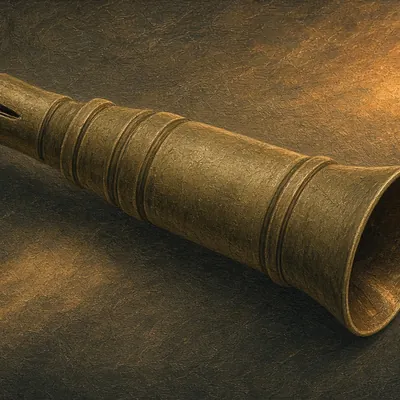

Calls & Decoys
Grunt calls, box calls, duck calls and decoys for every season.
Disclosure: We may earn a commission from links on this site, at no extra cost to you. As an Amazon Associate I earn from qualifying purchases. Links open each store's own search. We never show prices, ratings or reviews, so check details on the retailer's site. Shop top-rated → opens the store's search sorted by customer rating. Details
📯 Calls & Decoys
 Category
CategoryGrunt call
Soft, short grunts during the rut. Over-calling spooks more deer than it brings in.
CategoryRattling antlers / bag
Rattling works best around the pre-rut. Watch downwind, because bucks often circle.
Turkey box call
Easy to learn and loud enough to locate birds on windy days.
Turkey slate / pot call
Soft yelps, clucks and purrs for close work. Bring a striker conditioner.
Turkey mouth calls
Keep your hands free for the gun. Takes practice, so start before the season.
Owl / crow locator calls
Shock-gobble birds on the roost without calling them to you.
 Category
CategoryDuck call
Single-reed calls are easier to learn, double-reeds are raspier. Practice with recordings.

CategoryGoose call
Short-reed calls are versatile, but they take practice to master.
 Category
CategoryDuck decoys
Match the species you hunt and the way local birds sit. Weights and line matter as much as paint.
Turkey decoys
Hen plus jake setups are common in spring. Never carry a decoy uncovered in the woods.
Elk bugle and cow calls
Cow calls work all season. Bugles are louder and can push bulls away if used carelessly.
Predator call
Distress sounds for coyotes and foxes. Hand and electronic calls are both legal in many places; check your state.
Read before you buy
The Waterfowl Blind Gear List: What to Bring and Why
GuideSpring Turkey Setup: Roosting, Calling and Decoy Placement
Other departments
Optics · Clothing & Boots · Tree Stands & Blinds · Scent Control · Archery · Firearm Accessories · Game Processing · Camp & Lodging Gear · Safety · Electronics & Trail Cams · Dog Gear
Item images are illustrations, not the exact products sold.